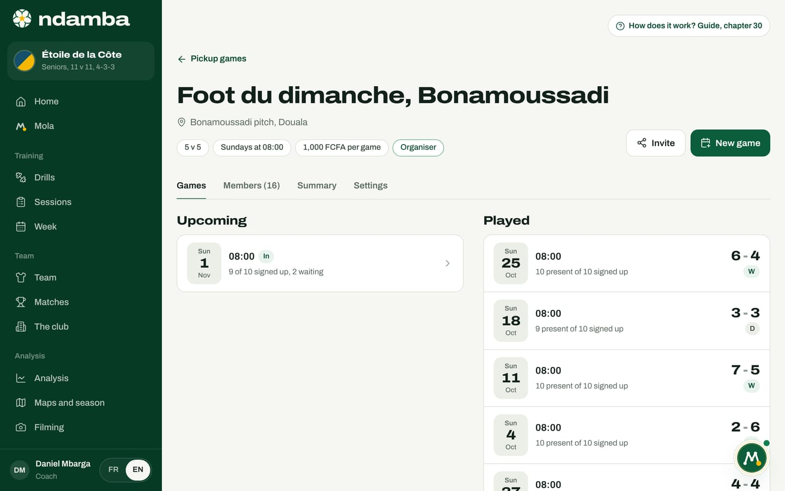
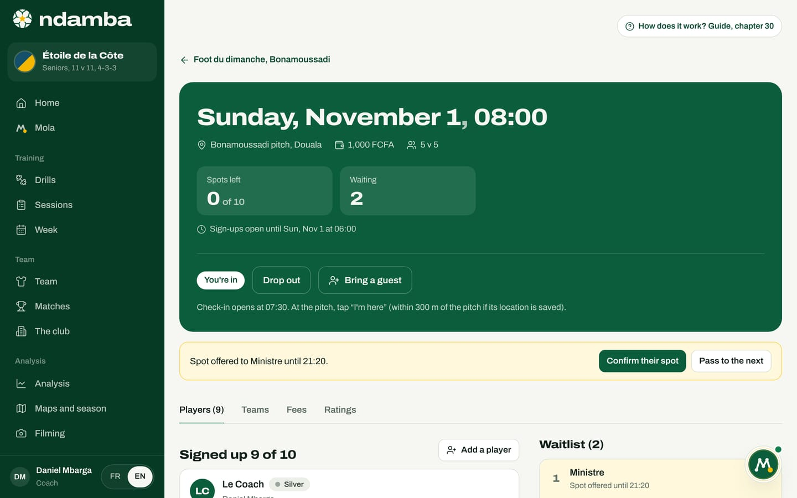
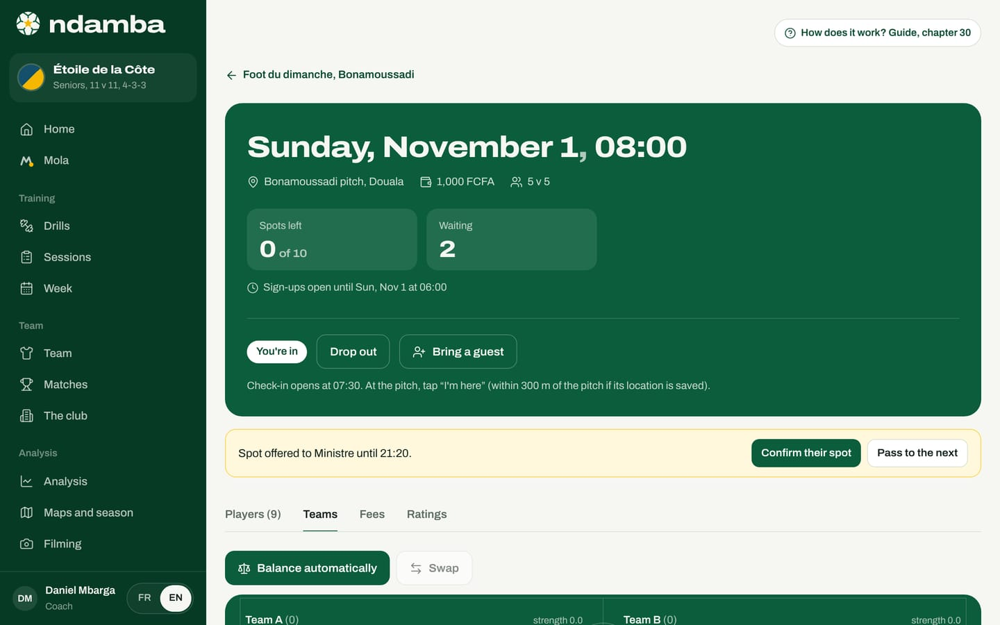
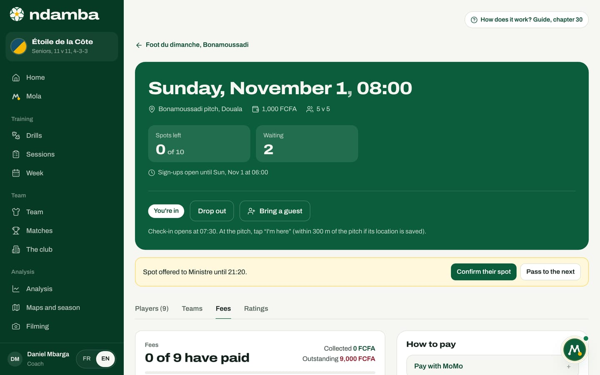
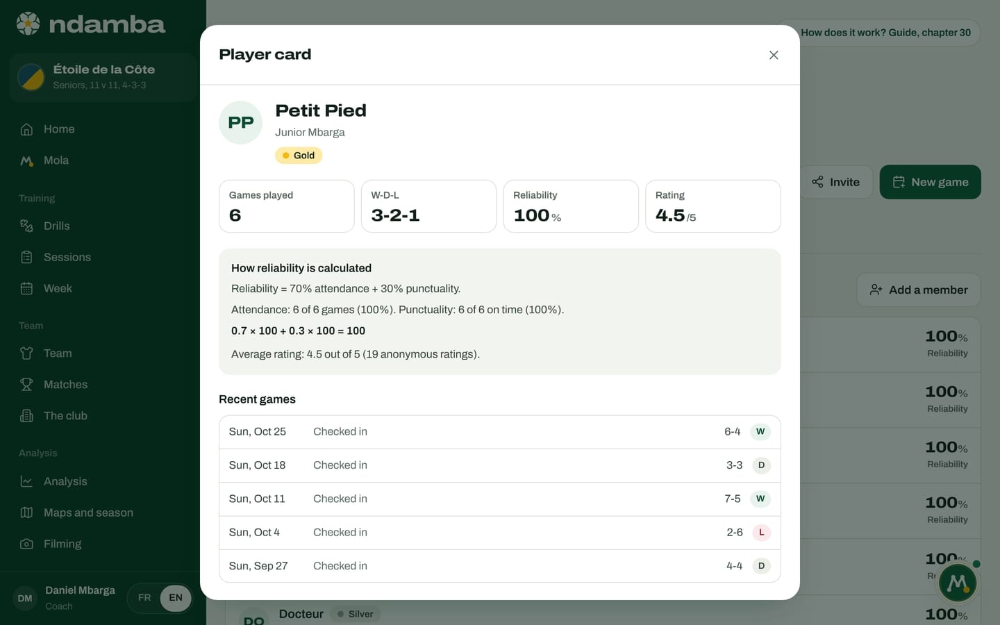
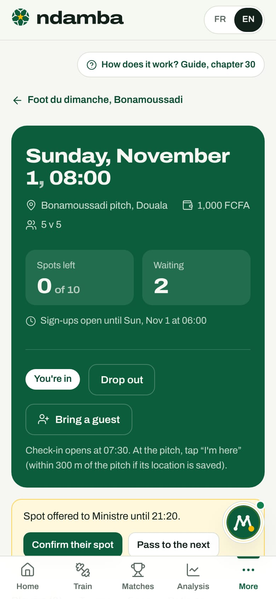

Pickup games
Your Sunday game without chasing anyone: groups and invite links, sign-ups with a deadline, a cap and a waitlist, guests, a minimum tier, check-in at the pitch, late arrivals and no-shows, balanced teams, the score, fees by Mobile Money, teammate ratings, tiers and reliability, the season summary, and the organiser plan. With today’s limits.
13 min read
African football does not only live in clubs. It lives on Sunday morning on the neighbourhood pitch and on Thursday evening on a five-a-side in town, among colleagues, former players and neighbours. These games all have the same tired organiser: the one who revives the WhatsApp group, counts the "I’m in"s, chases those who never show up, picks the teams at the pitch and collects the money for the pitch. Pickup games is that organiser’s tool. It does not replace the WhatsApp group: it gives it a reliable list, clear rules and honest accounts.
For Ndamba, it is also a way in. A Sunday player does not need a match report; they need to know whether they are playing. Players never pay anything.
Open pickup games
In the menu, under Play, tap Pickup games (address /app/pickup). On a phone it sits in the More panel. The subtitle says it all: "Run your Sunday game without chasing anyone: sign-ups with a waitlist, check-in at the pitch, balanced teams, fees and everyone’s reliability."

The page has four blocks:
- My next games: the games you are signed up for, with the day, the kick-off, the pitch, the fee, your status and the count ("9 of 10 signed up, 2 waiting").
- My groups: each group with your role (Organiser, Co-organiser or Player), the format, the day, the number of members and the next game ("spots left: 0").
- Join with a code: "Did the organiser give you a six-character code? Type it here."
- Organiser plan, and the Where your groups live box.
In the demo you are "Le Coach": organiser of Foot du dimanche, Bonamoussadi (5 v 5, Sundays at 08:00, 1,000 FCFA per game, 16 members) and a plain player in Five du jeudi, Bastos, in Yaoundé. With no group yet, the page offers Create a group and Load an example.
Create a group and invite
Create a group opens a form:
- Group name: "The name everyone recognises, for example the day and the neighbourhood."
- Pitch and City.
- Pitch location, optional: at the pitch, tap Save my current location. The location check-in will then accept players within 300 m.
- Players per team (5 v 5, 7 v 7…), Usual day and Time.
- Fee per game (0 for a free game) and Currency (FCFA, USD or EUR).
- Minimum tier: None, Bronze, Silver or Gold. "Below this tier, signing up becomes a request that you approve."
- Guests allowed (+1) and Teammate ratings.
- Where to send the fee: MTN MoMo number, Orange Money number, Cash accepted at the pitch. Players will see these numbers and a game code to put in the transfer note.
- Create the group.
All of this can be changed later in the group’s Settings tab.
Invite. The group’s Invite button opens Invite players: a link in the form /rejoindre/ followed by the group’s code (BNM7K2 in the demo), Copy the link and Share on WhatsApp, with a ready message: "Hi! Join “Foot du dimanche, Bonamoussadi” on Ndamba… Sign up here." The window spells it out: "You send the message yourself. For now, the link opens the group on this device; invites between phones will come with accounts."
The /rejoindre/ page shows the invite: the group’s name, the pitch, the format and the number of players, the day, the fee, the next game with its sign-ups, and Open the group or Join the group. "Playing is always free." On a phone where the group does not exist, it shows An invite is waiting for you, the code, and advises replying to the organiser on WhatsApp: they will add you to their list. That is today’s limit, and it is why the organiser can do everything on behalf of their players.
Add a member (in the Members tab) creates a player by hand: Name, Nickname ("The name shouted on the pitch. By default, the first name.") and Phone, optional.
The group


The group header recalls the pitch, the format, the day and the fee. Four tabs follow:
- Games: Upcoming, then Played, each with its attendance ("10 present of 10 signed up"), its score and your result (W, D, L).
- Members: every player with their nickname, tier, role, wins, draws and losses, and their Reliability. "Tap a player to see their card."
- Summary: the group’s season (further down).
- Settings: the group form, the invite link, the organisers, and Delete the group (or Leave the group for a player).
New game asks for the Date, the Kick-off, the Spots ("By default, two teams of 5."), the Fee, Sign-ups close ("After this time, players can no longer sign themselves up. You can still add someone.") and a Note for the players ("Bibs provided, bring water").
Sign-ups and their rules


A game’s page shows in large type the Spots left ("0 of 10") and Waiting (2), then the deadline ("Sign-ups open until … at 06:00") and your buttons. The rules are those of a good organiser, applied without exceptions:
| Situation | What happens |
|---|---|
| A spot is free | I’m in: your spot is reserved |
| The game is full | Join the waitlist: you go to the end of the list |
| A spot opens up | It is offered to the first person on the list for 15 minutes |
| You are below the minimum tier | Ask to play: the organiser can Approve or Decline |
| The deadline has passed | Sign-ups are closed; only the organiser can still add someone |
| You are suspended | Signing up is blocked (see below) |
Dropping out. Drop out frees your spot and thanks you for letting the group know. Dropping out is never punished: not showing up without a word is.
The waitlist and the offered spot. When a spot opens up, the first person on the list gets "A spot is offered to you until" a precise time, with Take the spot and Let it go. Once that window has passed, the organiser sees that it has expired and chooses Confirm their spot or Pass to the next. In the demo, a spot is offered to "Ministre", first on the list; "Vieux Père" waits behind him. Today no notification goes out: the person has to open the app, or the organiser has to tell them on WhatsApp.
Guests. If the group allows them, Bring a guest adds a Guest’s first name. "Your guest takes a real spot, under your name (and so does their fee). If the game is full, they go to the end of the waitlist." And the fairness rule: "A guest never jumps the queue."
The organiser. Add a player signs up a member who replied by message: the cap and the waitlist apply, the deadline does not. Cancel this game and Reopen this game are for rainy days.
Check-in at the pitch
A sign-up is worth nothing if nobody checks who came. Check-in opens 30 minutes before kick-off and closes 30 minutes after. Before that, the page announces it: "Check-in opens at 07:30. At the pitch, tap “I’m here” (within 300 m of the pitch if its location is saved)."
- At the pitch, during the window, tap I’m here.
- If the group has saved the pitch location, the phone asks for your location and works out the distance. Within 300 m, the check-in is confirmed with the distance; further away, "Get closer, or ask the organiser to check you in."
- Without a pitch location, or if location is refused, the organiser checks you in with Check in: their line reminds them, "Tap “Check in” for anyone who could not do it."
Late. Checking in more than 15 minutes after kick-off counts as late, not absent. The organiser can correct it with Mark late or Not late on the player’s card.
No-shows. When check-in closes, every signed-up player who did not check in gets the No-show status and a flag dated on the game. The page tells the organiser: "Check-in is closed. Enter the score in the Teams tab; players who did not show up without notice got a flag." A guest is never flagged.
Suspension. Three flags in 30 days block sign-ups in the group, for 30 days after the last one: "Your sign-ups are blocked: 3 no-shows in 30 days. The organiser can lift the suspension." On the player’s card, the organiser can Remove the flag of a given date, Clear the flags or Lift the suspension. A mistake can also be fixed with Mark present or Excuse the absence: the flag goes away with it.
The location is used for one thing only: working out, on the phone, the distance between you and the pitch at check-in. Ndamba does not keep it running and sends it nowhere (chapter 25).
Teams, then the score


The Teams tab shows Team A, Team B and No team, each player with their strength. Balance automatically spreads the signed-up players: strongest first, each into the team with the lower total, keeping the sizes within one player of each other. A player’s strength is their average rating (3 while it does not count yet), plus a small tier bonus (0.3 for gold, 0.15 for silver, 0.05 for bronze). Each team shows its total strength.
Then by hand: "Drag a player from one team to the other, or tap one player in each team, then “Swap”." The organiser keeps the last word; the tool only saves the quarter of an hour of arguing at the side of the pitch.
The score. It can be entered from kick-off, in Game score, with Save the score (and Edit the score afterwards). Without saved teams, it does not count in wins, draws and losses. A no-show does not share the result of the team they had been put in.
Fees


The Fees tab gives the count ("0 of 9 have paid", Collected, Outstanding) then one line per player. The organiser ticks the method when the money arrives: MoMo, Orange Money, Cash or Waived (a waived spot counts neither as paid nor as owed). Until something is ticked, the line says Unpaid.
On the player’s side, How to pay gives three steps: "Send 1,000 FCFA to …, the organiser, on this number", "In the transfer note, write this game code", "The organiser ticks your payment when it arrives.", with Copy the number and Copy the code. The game code tells the organiser what each transfer pays for. "Only the organisers see who paid."
The sentence that matters is written under the buttons: "Ndamba never touches the money: the transfer happens in your Mobile Money app. In-app payments will come with accounts."
Ratings, tiers and reliability
Teammate ratings. If the group has turned them on, the Ratings tab opens once the organiser has saved the score. Only players who checked in rate their teammates from that game, from 1 to 5 (Tough day, Average, Solid, Good, Excellent). "It is anonymous: nobody sees who gave which rating." An average only counts from 3 ratings received.
Tiers. A game played is a game where the player checked in.
| Tier | Condition |
|---|---|
| New | Fewer than 2 games played |
| Bronze | 2 games played or more |
| Silver | 3 games played or more, and an average of 3.5 or more |
| Gold | 5 games played or more, and an average of 4.2 or more |
Until the average counts (fewer than three ratings), the tier stops at bronze.
Reliability. It is the question every organiser asks: if this one says "I’m in", will he come? The formula is shown on every card: "Reliability = 70% attendance + 30% punctuality." Attendance is the share of games the player signed up for and checked in to; punctuality, the share of their check-ins made on time, that is less than 15 minutes after kick-off. Two examples from the demo:
- "Vieux Père": signed up 4 times, present 4 times, late once. Attendance 100%, punctuality 75%: 0.7 × 100 + 0.3 × 75 = 92.5, shown as 93%.
- "Sorcier": signed up 3 times, present twice, never late. Attendance 67%, punctuality 100%: 0.7 × 66.7 + 0.3 × 100 = 76.7, shown as 77%, with "1 flag".


The player card. Tap a player, in a game or in Members: the Player card with their nickname, name, tier, Games played, W-D-L, Reliability and Rating, then How reliability is calculated with their own numbers ("Attendance: 6 of 6 games (100%). Punctuality: 6 of 6 on time (100%)." for Petit Pied), their average rating ("4.5 out of 5 (19 anonymous ratings)") and what they need for the next tier. For a game in progress, the organiser finds Check in, Mark present, Excuse the absence, Mark late, Undo the check-in and Remove from the game; further down, Recent games, then Manage this member: Edit, Make co-organiser (three at most, with the organiser plan) and Remove from the group.
The season summary
The group’s Summary tab sums up a period: 30 days, 90 days or All. Six numbers at the top, then a table per player (signed up, present, no-shows, late, attendance, guests, paid, owed). In the demo, over six games: 98% attendance, one no-show, two late arrivals, one guest, 57,000 FCFA collected and 3,000 FCFA still owed. "Guests’ fees count for the player who brought them."
Export as CSV downloads the table for a spreadsheet: enough to report to the group at the end of the season, or to pay for the pitch without an argument.
The organiser plan
The rule is simple: players always play for free. The organiser tools are paid, with a 30-day free trial: $3.99 a month or $34.99 a year (about 2,400 FCFA a month). These prices are proposals, to be confirmed with the first groups.
The plan unlocks:
- fee tracking (MTN MoMo, Orange Money, cash, who paid and who owes);
- the season summary per player and the CSV export;
- automatically balanced teams and the drag-and-drop board;
- up to three co-organisers;
- more than three groups you organise.
Everything else is free for everyone: groups, sign-ups, the waitlist, check-in, the score, ratings, tiers and reliability. Without the plan, a paid tool shows its name and offers the trial, reminding you that players always play for free.
On the pickup games home page, the Organiser plan card shows the state ("Trial: 21 days left" in the demo) and the buttons Start the 30-day free trial, Switch to the monthly plan, Switch to the yearly plan, Stop the trial. And its last line: "Payments are not connected yet: the trial and the plan are a demonstration on this device, nothing is billed."


Today’s limits
The Where your groups live box writes them out: "Today, your groups live on this device. Invites shared between phones, notifications and real Mobile Money payments need accounts: they are on the roadmap. Until then, the organiser keeps the list for the whole group and shares the link on WhatsApp."
In practice:
- A group lives on the phone that created it. Players only sign themselves up on that device; elsewhere they reply on WhatsApp and the organiser adds them.
- No notification goes out. No reminder before the game, no alert for an offered spot.
- No real payment. The Mobile Money numbers are shown for a transfer made outside Ndamba, and the organiser plan is a demonstration.